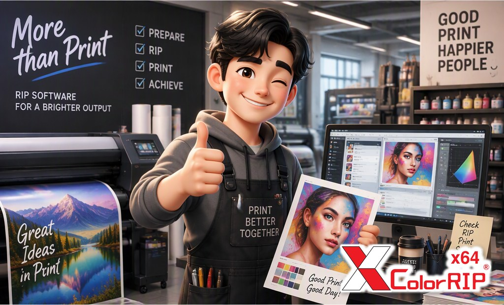

XColorRIP x64 is production RIP software for Epson printers and China-board DTF, UV and roll printers. 64-bit speed, white ink straight from your EPS, PSD, PNG or TIF, 6-color and 8-color Hi-Fi with white, and color management built in.

What XColorRIP does for your production, from speed to color.
The old 32-bit programs could never use more than 2 GB of memory, however much your PC had. XColorRIP is a native 64-bit program, so it can use all the memory that is not needed by the OS.
All your PC's memory is available to the RIP. Large files and long banners stay in memory.
Halftone (screening) and image processing run on multiple threads, so ripping speed improves dramatically.
An optional mode trades a little image detail (almost invisible) for even more speed. On a 600×5000 banner (SC4180H1) it ran 3.6× faster.*
*Standard mode 3:05 vs enlarge mode 0:51. Results depend on printer and file.
Supports PSD and PNG transparency, TIF mask channels, and EPS files.
Hi-Fi color is where DTF and UV printing is going. XColorRIP supports 6-color (CMYK + Orange + Green) and 8-color (CMYK + Orange + Green + Red + Blue), plus white mode, for DTF and UV printers.
The Density Read program ships with the standard version, so you can do the full CMS workflow (density curves, ink limits and ICC profiles) without buying anything extra.
Short videos with real prints and real settings. New videos are added here as they are published on our YouTube channel.
Mainly Epson printers and China-board DTF, UV and roll printers, plus other major brands. If you need a new printer driver, we can support it. Ask us.
A4: R800, R290, T50, B310, B510
A3: 1390, R1800, R2400, R1900, R2880, R2000, R3000, P450, P600
A2: 3800, 3880, 4000, 4800, 4400, 4880, 4450, 4900, P800
A1: 7600, 7800, 7880, 7400, 7450, 7700, 7900, P5000
A0: 9600, 9800, 9880, 9400, 9450, 9700, 9900, P7000 · 60": 11880
Others: F7000, F6000, T3000, T5000, T7000 · flatbed printers are available
Hosson board: DTF, UV, roll printers · XP600, i3200 (H2, H4)
BYHX board: DTF · XP600, i3200 (H2, H4)
SY board: DTF, UV, roll printers · XP600, i3200
DTF, UV, sublimation and roll printers built on these boards.
| Mutoh | RJ900, RJ8000, VJ 1204, 1604, 1618, 1638, 1924, 1938 |
| Roland | FJ740, XJ740, FH640, RA640, XF640 |
| Mimaki | JV4, JV5, JV33, TS34 |
| HP | 3000CP, 5000, 800 |
| DGI | OmegaJet, VT92, Infiniti (all drivers), ShanghaiTekwin (all drivers) |
The software package, and PDF files you can read, save and share.
Download the XColorRIP x64 package (zip, Windows 64-bit) from our GitHub releases page. It holds the installer, the color profiles (input ICC) and samples: extract everything, then run setup.exe. XColorRIP runs with a license key, either a trial key or a full license. No key yet? Request a trial.
XColorRIP x64 in two pages: 64-bit speed, Epson DTF roll and one-pass white, color management, 6C / 8C Hi-Fi, and the supported printers.
What's new for users of the previous 32-bit version: what changed, and where and how to use each new feature.
We work with local dealers, especially printer importers and DTF, sublimation and UV system sellers who want better color and a RIP their customers can actually use. Tell us your region and the printers you carry.
Tell us your printer and we will get you started.
Request a Trial Contact us